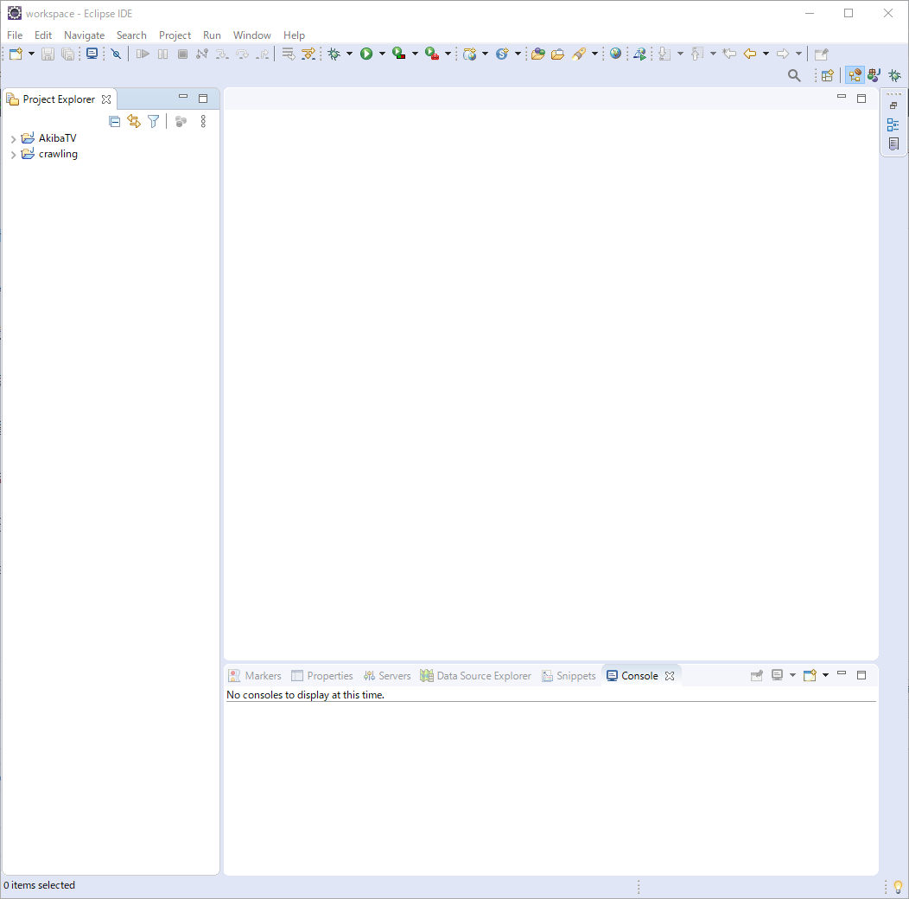
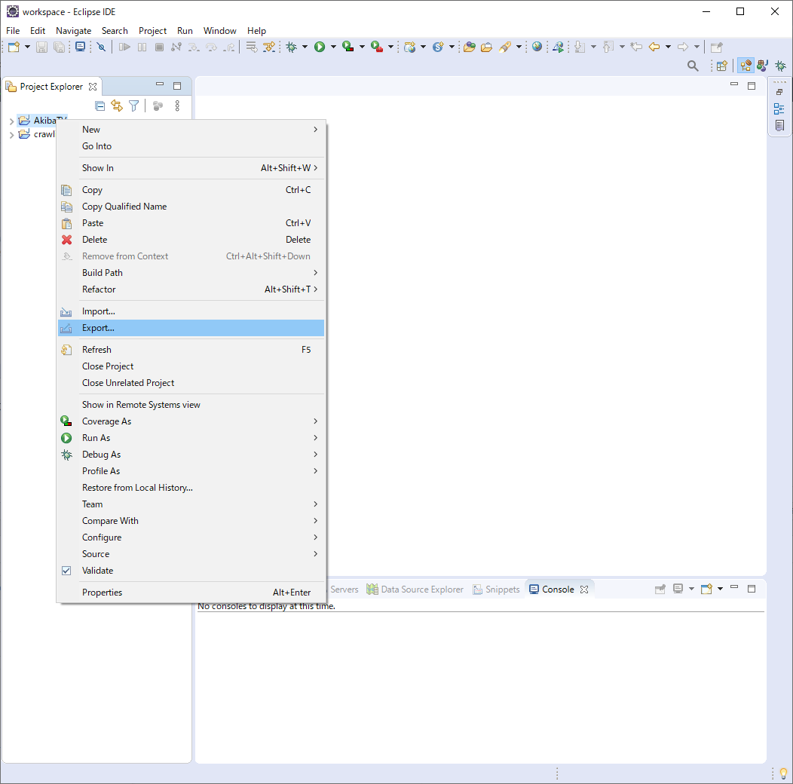
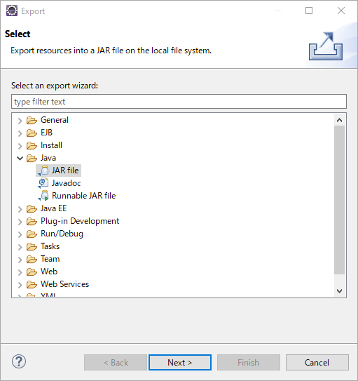
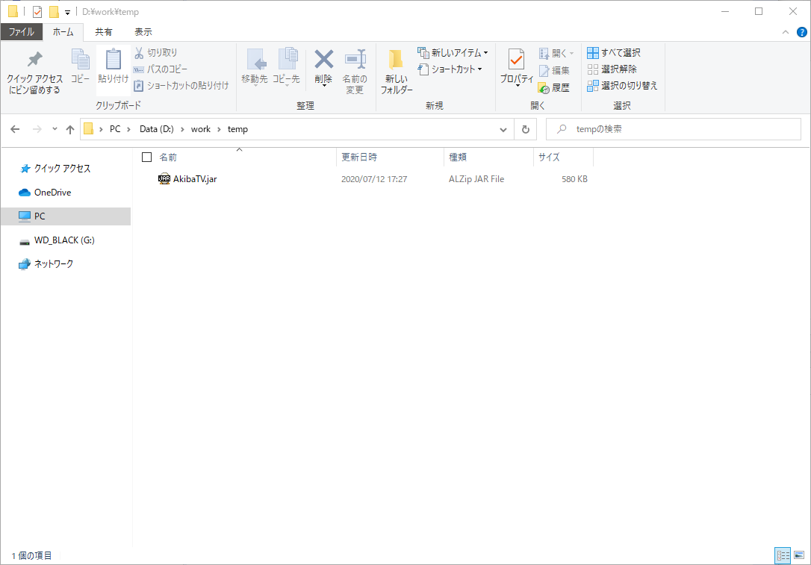

JAVA에서 개발한 프로젝트 JAR파일로 만들기
JAVA에서 개발한 프로젝트 JAR파일로 만들기
안녕하세요. AkibaTV입니다.
이번에 소개할 내용은 JAVA에서 개발한 프로젝트 JAR파일로 만들기 입니다.
자바에서 자바 어플리케이션으로 프로젝트를 개발을 하시면
이 프로그램을 서버에 올려놓고 콘솔로 구동을 해야만 합니다만
소스파일을 일일이 올리고 돌리는 방법도 있겠습니다만
이건 소스관리도 그렇고 매번 클래스 파일 하나하나 올리는것도 비효율적이기 때문에
JAR파일로 하나의 파일로 만드는 방법을 알아보도록 하겠습니다.
우선 이클립스를 실행을 해주시기 바랍니다.

이클립스를 실행 하셨으면 기존에 만들어둔 AkibaTV를 JAR로 만들어 보도록 하겠습니다.

AkibaTV를 선택후 Export를 선택해 주시기 바랍니다.

위와같이 나오시면 JAVA의 JAR file을 선택하시고 Next를 눌러주세요.

위와같이 나오시면 체크 부분을 위와 동일하게 체크를 하시고
JAR파일을 저장하실 경로를 지정을 해주시고 Finish를 눌러주시면
JAR파일이 만들기가 끝나게 됩니다.
위와같이 JAR파일이 만들어진것을 확인 하실수 있습니다.
다음에는 JAR파일을 이용해서 서버환경에서 실행하는 방법을 알아보도록 하겠습니다.